4.5 Acid-base Equilibria · Topic 14
pH, Ka, Kw, titration curves and buffer solutions
4.5 Acid-base Equilibria · Topic 14
本页严格按 Pearson Edexcel International Advanced Level Chemistry specification 的 Topic 14: Acid-base Equilibria 编排，内容来自项目内的 `4.5 Acid-base Equilibria.pdf.pdf`。解释采用中文，专业词汇保留 English，便于和 specification、Data Booklet 及 exam wording 对照。
Learning objectives
学完本章后，你应该能够：
- define Brønsted-Lowry acid、base 和 conjugate acid-base pairs；
- calculate pH from \([\ce{H+}]\)，并由 pH 求 \([\ce{H+}]\)；
- distinguish strong acids / bases from weak acids / bases；
- write \(K_a\)、p\(K_a\)、\(K_w\) 和 p\(K_w\) expressions；
- calculate pH of strong acids、weak acids 和 strong bases；
- analyse pH data for acids、bases、salts 和 dilution；
- draw and interpret strong / weak acid-base titration curves；
- choose a suitable indicator from its transition range；
- explain buffer action and calculate buffer pH；
- calculate concentrations required to prepare a buffer of a given pH；
- apply buffer chemistry to blood and food；
- complete Core Practical 11: finding the \(K_a\) value for a weak acid。
14.1 Brønsted-Lowry acid and base theory
Proton transfer
Brønsted-Lowry acid 是 proton donor；Brønsted-Lowry base 是 proton acceptor。Acid-base reaction 的本质是 proton transfer。
Examples：
\[ \ce{HCl(aq) -> H+(aq) + Cl-(aq)} \]
\(\ce{HCl}\) donate a proton，因此是 acid。
\[ \ce{OH-(aq) + H+(aq) -> H2O(l)} \]
\(\ce{OH-}\) accept a proton，因此是 base。
这个 definition 适用于 aqueous solution 以外的许多 proton-transfer reaction。
Conjugate acid-base pairs
Conjugate acid-base pair 是相差 exactly one proton 的两个 species。以 ethanoic acid 在 water 中的 ionisation 为例：
\[ \ce{CH3COOH(aq) + H2O(l) <=> CH3COO-(aq) + H3O+(aq)} \]
- \(\ce{CH3COOH/CH3COO-}\) 是 conjugate acid-base pair；
- \(\ce{H2O/H3O+}\) 是 conjugate base-acid pair。
Reactant acid 失去 proton 后形成 conjugate base；reactant base 获得 proton 后形成 conjugate acid。
Strong and weak acids
Strong acid 在 aqueous solution 中 almost completely dissociates，equilibrium position strongly favours ions：
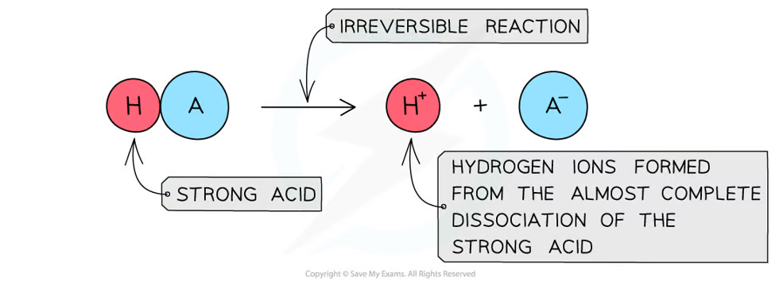
Weak acid 只 partially dissociates，建立 equilibrium，solution 中仍有较多 undissociated acid molecules：
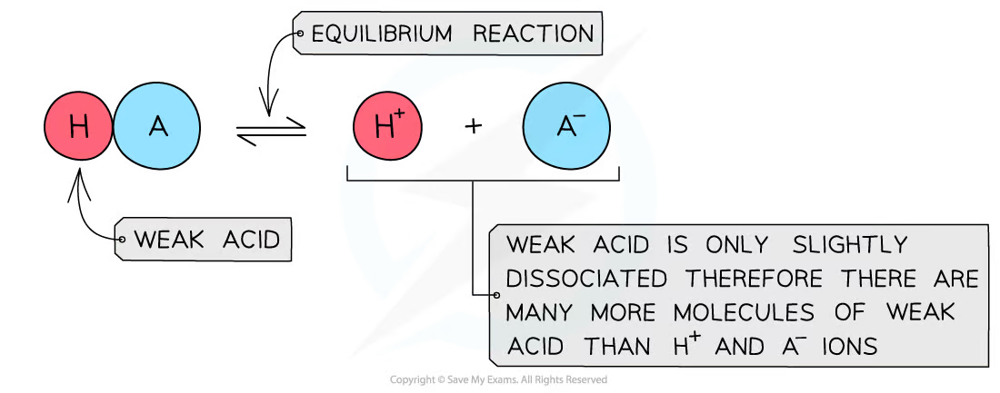
Strong / weak 描述的是 degree of dissociation，不是 solution 的 concentration。Dilute strong acid 仍然是 strong acid；concentrated weak acid 仍然是 weak acid。
14.3-14.5 pH
pH definition
\[ \mathrm{pH}=-\log_{10}[\ce{H+}] \]
其中 \([\ce{H+}]\) 的单位为 \(\mathrm{mol\,dm^{-3}}\)。Rearrange 可得：
\[ [\ce{H+}]=10^{-\mathrm{pH}} \]
pH scale 是 base-10 logarithmic scale，因此 pH 每增加 1，\([\ce{H+}]\) 就减少 10 倍。pH 通常写到 2 decimal places。
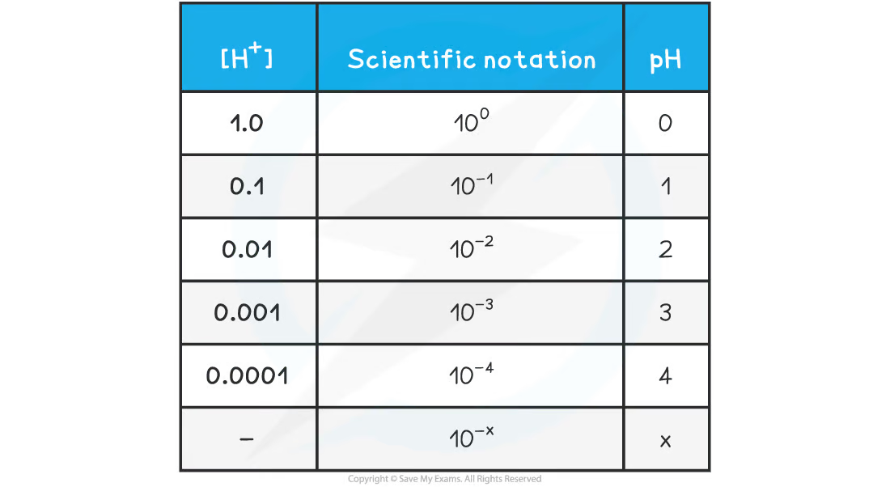
Worked example · pH and hydrogen concentration
- Find pH when \([\ce{H+}]=1.60\times10^{-4}\ \mathrm{mol\,dm^{-3}}\)。
- Find \([\ce{H+}]\) when pH \(=3.10\)。
\[ \mathrm{pH}=-\log(1.60\times10^{-4})=3.80 \]
\[ [\ce{H+}]=10^{-3.10}=7.94\times10^{-4}\ \mathrm{mol\,dm^{-3}} \]
Dilution and pH
如果 strong acid 的 concentration 被 dilution 100 倍，\([\ce{H+}]\) 减少 \(10^2\) 倍，因此 pH 增加 2。
Example：10.0 cm\(^3\) pH 1.0 acid 加入 990.0 cm\(^3\) water，total volume 变成 1000.0 cm\(^3\)，concentration dilution factor 为 100，final pH 约为 3.0。
但当 strong acid 极度 dilute 时，不能再忽略 water 的 self-ionisation；pH 不会无限增加到 alkaline value，而会接近 pH 7。
14.6-14.9 Acid strength and \(K_a\)
Acid dissociation constant
对于 weak monoprotic acid：
\[ \ce{HA(aq) <=> H+(aq) + A-(aq)} \]
\[ K_a=\frac{[\ce{H+}][\ce{A-}]}{[\ce{HA}]} \]
\(K_a\) 越大，acid dissociation extent 越大，acid 越 strong。\(K_a\) 越小，acid 越 weak。
\[ \mathrm{p}K_a=-\log_{10}K_a \]
p\(K_a\) 越小，acid 越 strong。
Comparing acid strength
比较 equimolar acid solutions 时，pH 越低，说明 \([\ce{H+}]\) 越大，acid 相对越 strong。比较 \(K_a\) 或 p\(K_a\) 时：
| Acid | \(K_a\) / \(\mathrm{mol\,dm^{-3}}\) | p\(K_a\) |
|---|---|---|
| methanoic acid | \(4.77\times10^{-4}\) | 3.32 |
| ethanoic acid | \(1.74\times10^{-5}\) | 4.76 |
| benzoic acid | \(6.46\times10^{-5}\) | 4.19 |
| carbonic acid | \(4.30\times10^{-7}\) | 6.36 |
因此 methanoic acid 比 ethanoic acid strong，carbonic acid 最 weak。
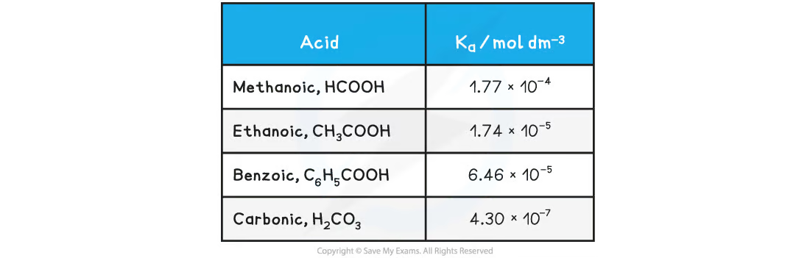
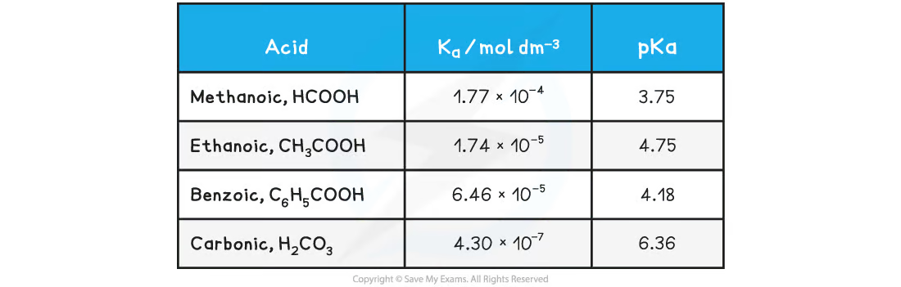
Required assumption for weak-acid pH calculations
计算 weak acid pH 时，通常使用两个 assumptions：
- 每个 \(\ce{HA}\) dissociate 会形成 one \(\ce{H+}\) 和 one \(\ce{A-}\)，所以 \([\ce{H+}]=[\ce{A-}]\)；
- weak acid 的 degree of dissociation 很小，因此 equilibrium \([\ce{HA}]\) 近似等于 initial \([\ce{HA}]\)。
Specification 明确说明不要求 solve quadratic equations。
Strong-acid pH
Strong acid almost completely ionises：
\[ \ce{HA(aq) -> H+(aq) + A-(aq)} \]
对于 monoprotic strong acid：
\[ [\ce{H+}]\approx[\ce{HA}]_{\mathrm{initial}} \]
例如 \(0.0100\ \mathrm{mol\,dm^{-3}}\) \(\ce{HCl}\)：
\[ \mathrm{pH}=-\log(0.0100)=2.00 \]
Diprotic acids 要谨慎处理。\(\ce{H2SO4}\) 的 first ionisation nearly complete，但 second ionisation 建立 equilibrium，因此不能简单地把 \([\ce{H+}]\) 直接设为 \(2[\ce{H2SO4}]\)。
Weak-acid pH
由 \(K_a\) expression 和 \([\ce{H+}]=[\ce{A-}]\)：
\[ K_a=\frac{[\ce{H+}]^2}{[\ce{HA}]} \]
因此：
\[ [\ce{H+}]=\sqrt{K_a[\ce{HA}]} \]
随后使用 \(\mathrm{pH}=-\log[\ce{H+}]\)。
Worked example · pH of ethanoic acid
Calculate the pH of \(0.100\ \mathrm{mol\,dm^{-3}}\) ethanoic acid at \(298\ \mathrm{K}\)，given \(K_a=1.74\times10^{-5}\ \mathrm{mol\,dm^{-3}}\)。
\[ [\ce{H+}] =\sqrt{(1.74\times10^{-5})(0.100)} =1.32\times10^{-3}\ \mathrm{mol\,dm^{-3}} \]
\[ \mathrm{pH}=-\log(1.32\times10^{-3})=2.88 \]
Answer： pH \(=2.88\)。
14.10-14.12 Ionic product of water
\(K_w\) and p\(K_w\)
Water self-ionisation：
\[ \ce{H2O(l) <=> H+(aq) + OH-(aq)} \]
由于 pure water 的 concentration 近似 constant，ionic product 为：
\[ K_w=[\ce{H+}][\ce{OH-}] \]
在 \(298\ \mathrm{K}\)：
\[ K_w=1.00\times10^{-14}\ \mathrm{mol^2\,dm^{-6}} \]
并且：
\[ \mathrm{p}K_w=-\log K_w \]
在 \(298\ \mathrm{K}\)，p\(K_w=14.00\)。
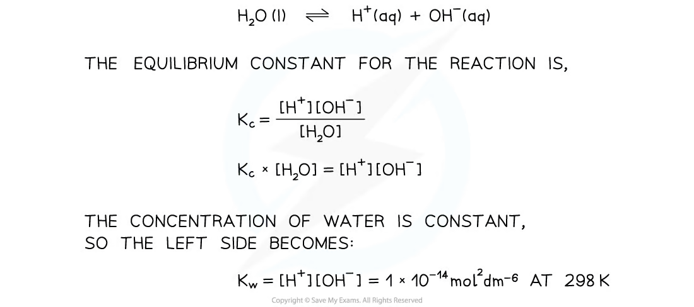
Acidic, neutral and alkaline solutions
在 \(298\ \mathrm{K}\)：
- acidic：\([\ce{H+}]>[\ce{OH-}]\)，pH \(<7\)；
- neutral：\([\ce{H+}]=[\ce{OH-}]\)，pH \(=7\)；
- alkaline：\([\ce{H+}]<[\ce{OH-}]\)，pH \(>7\)。
已知其中一个 ion concentration 时，可用：
\[ [\ce{OH-}]=\frac{K_w}{[\ce{H+}]} \qquad [\ce{H+}]=\frac{K_w}{[\ce{OH-}]} \]
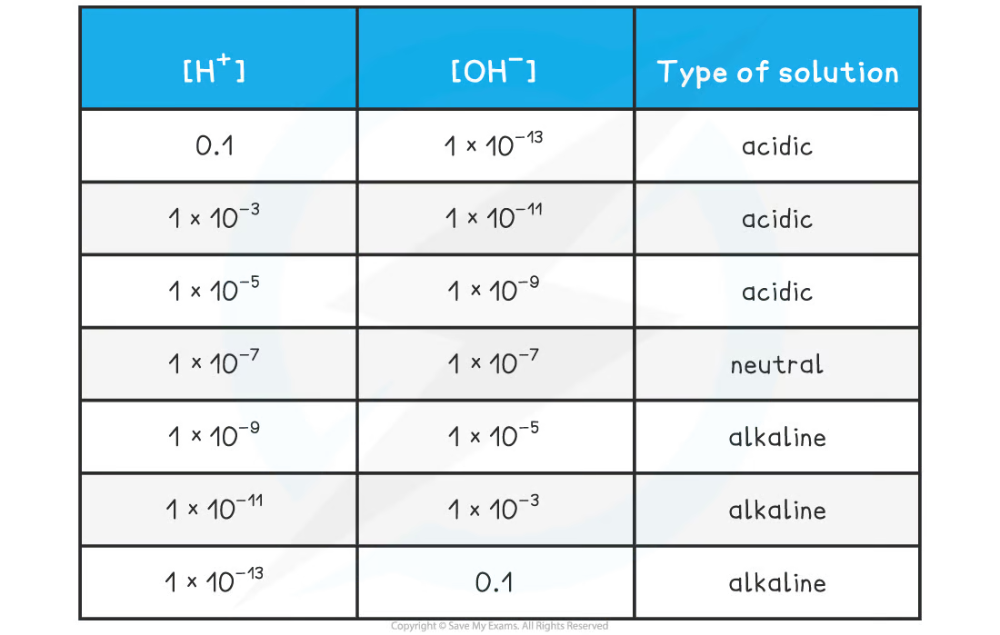
Worked example · pH of a strong base
Calculate pH of \(0.150\ \mathrm{mol\,dm^{-3}}\) \(\ce{NaOH}\)。
\(\ce{NaOH}\) 是 strong base：
\[ [\ce{OH-}]=0.150\ \mathrm{mol\,dm^{-3}} \]
\[ [\ce{H+}] =\frac{1.00\times10^{-14}}{0.150} =6.67\times10^{-14} \]
\[ \mathrm{pH}=-\log(6.67\times10^{-14})=13.18 \]
14.13 Analysing pH data
Acids, bases and salts
在相同 temperature 下比较 equimolar solutions：
- acid solution 的 pH 越低，acid 越 strong；
- base solution 的 pH 越高，base 越 strong；
- salt 的 pH 取决于 parent acid 与 parent base 的 strength。
Examples：
- \(\ce{NaCl}\)、\(\ce{KNO3}\)：strong acid + strong base，approximately neutral；
- \(\ce{CH3COONa}\)：weak acid + strong base，alkaline；
- \(\ce{NH4Cl}\)：strong acid + weak base，acidic；
- \(\ce{CH3COONH4}\)：weak acid + weak base，若 relative strengths 相近可接近 neutral。
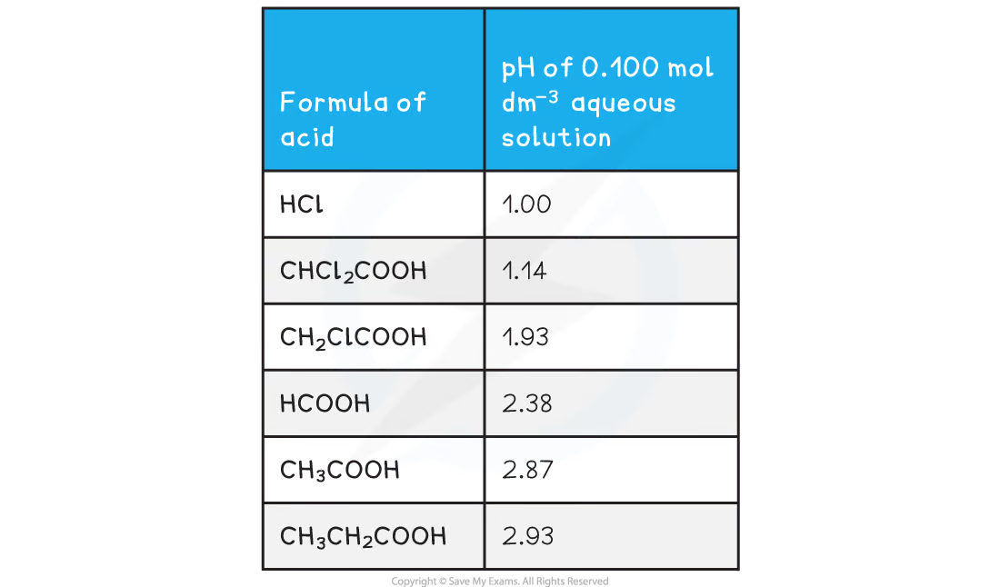
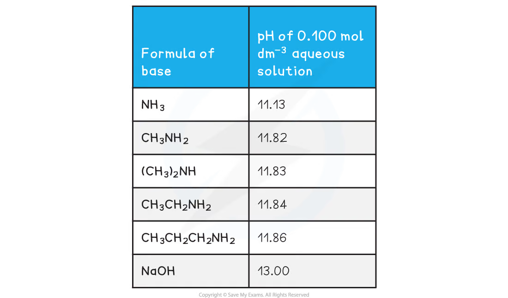
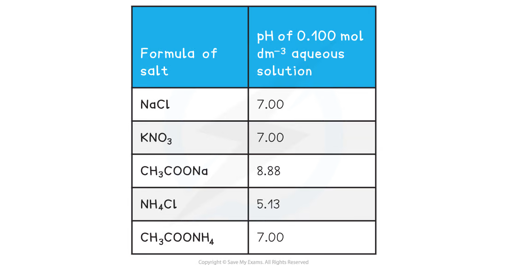
Dilution of strong and weak acids
Strong acid：concentration 每减少 factor 10，pH 通常增加 1 unit；但极度 dilute 时 water contribution 不能忽略。
Weak acid：dilution 会增加 degree of dissociation，但 \([\ce{H+}]\) 的变化不像 strong acid 那样直接，因此 pH 变化通常小于相同 factor 的 strong acid。
14.15-14.16 Titration curves and indicators
Reading a titration curve
Titration curve 是 pH against volume of acid / base added 的 graph。可以读出：
- initial pH；
- equivalence point 的 pH；
- equivalence volume；
- steep vertical section 的 pH range；
- buffer region（如果存在）。
Equivalence point 是 stoichiometric amounts 完全 neutralised 的 point，位于 steep inflection 的 midpoint，不一定 pH 7。
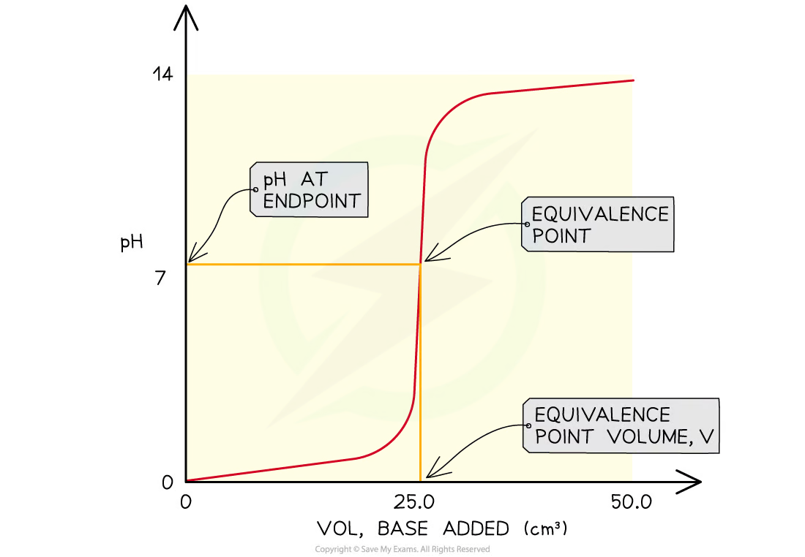
Four titration combinations
需要掌握四种 combinations：
| Acid | Base | Equivalence-point trend |
|---|---|---|
| strong acid | strong base | around pH 7 |
| strong acid | weak base | below pH 7 |
| weak acid | strong base | above pH 7 |
| weak acid | weak base | no large vertical section，indicator selection difficult |
Starting pH 和 equivalence-point pH 可以帮助识别 acid / base 的 relative strength。
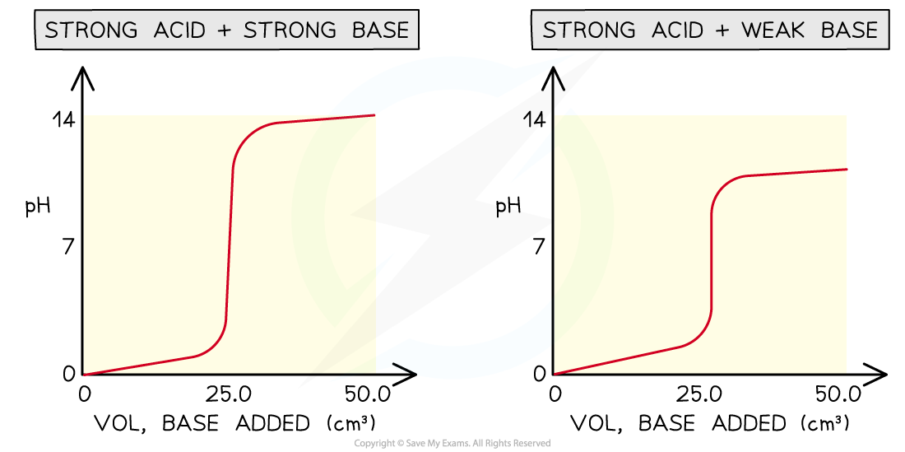
Selecting an indicator
Indicator 本身是 weak acid：
\[ \ce{HIn <=> H+ + In-} \]
两种 forms 有不同 colours。Indicator 的 transition range 应落在 titration curve 的 steep vertical section 内。
例如 methyl orange 的 p\(K_{\mathrm{In}}\) 约为 3.7，transition range 较低；weak acid-strong base titration 的 equivalence region 在 pH 8-10，因此应选择 transition range 较高的 phenolphthalein。
Indicator 的 colour change endpoint 应尽量接近 equivalence point。
Weak acid-strong base curve
以 \(\ce{CH3COOH}\) titrated with \(\ce{NaOH}\) 为例：
- initial pH 约为 3；
- 形成 \(\ce{CH3COO-}\) 后出现 buffer region；
- half-equivalence point：\([\ce{CH3COOH}]=[\ce{CH3COO-}]\)；
- half-equivalence point 的 pH = p\(K_a\)；
- equivalence point pH \(>7\)，因为 ethanoate ion hydrolysis 使 solution alkaline。
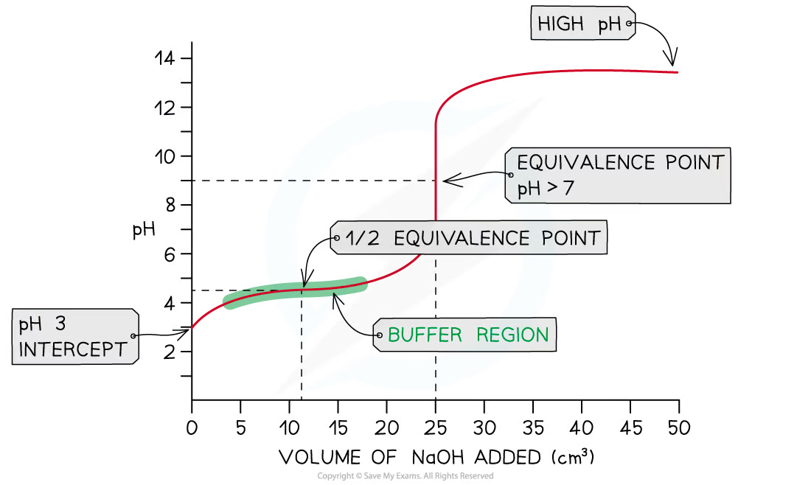
14.17-14.18 Buffer solutions
Definition and composition
Buffer solution 是能够 resist pH changes 的 solution，即加入 small amounts of acid 或 alkali 后 pH 只发生 small change。
Buffer 可以由以下组合构成：
- weak acid + its conjugate base；
- weak base + its conjugate acid。
常见 acidic buffer 是 ethanoic acid / sodium ethanoate：
\[ \ce{CH3COOH(aq) <=> H+(aq) + CH3COO-(aq)} \]
\(\ce{CH3COOH}\) 是 weak acid；\(\ce{CH3COONa}\) 完全 dissociates，提供 relatively high concentration of \(\ce{CH3COO-}\)。
Buffer action when acid is added
加入 \(\ce{H+}\) 时：
\[ \ce{CH3COO-(aq) + H+(aq) <=> CH3COOH(aq)} \]
Conjugate base consumes added \(\ce{H+}\)，equilibrium shifts left。由于 acid 和 conjugate base 都有 large reserve supply，它们的 concentrations 变化比例较小，所以 pH 只小幅下降。
Buffer action when alkali is added
加入 \(\ce{OH-}\) 时：
\[ \ce{OH-(aq) + H+(aq) -> H2O(l)} \]
\([\ce{H+}]\) 被消耗后，equilibrium shifts right：
\[ \ce{CH3COOH(aq) <=> H+(aq) + CH3COO-(aq)} \]
Weak acid dissociates to replace much of the removed \(\ce{H+}\)，因此 pH 只小幅上升。
Worked example · identifying a buffer
Which mixture forms a buffer with pH below 7？
- \(\ce{NaOH}\) and excess \(\ce{HCl}\)
- \(\ce{NaOH}\) and excess \(\ce{CH3COOH}\)
- excess \(\ce{NaOH}\) and \(\ce{HCl}\)
- excess \(\ce{NaOH}\) and \(\ce{CH3COOH}\)
Correct answer：\(\ce{NaOH}\) and excess \(\ce{CH3COOH}\)。
Strong base partially neutralises excess weak acid，留下 weak acid 和 its conjugate base \(\ce{CH3COO-}\)，形成 acidic buffer。
14.19-14.20 Buffer calculations
Henderson-Hasselbalch equation
由：
\[ K_a=\frac{[\ce{H+}][\text{base}]}{[\text{acid}]} \]
可得：
\[ [\ce{H+}] =K_a\frac{[\text{acid}]}{[\text{base}]} \]
取 negative logarithm：
\[ \mathrm{pH} =\mathrm{p}K_a+\log_{10}\left(\frac{[\text{base}]}{[\text{acid}]}\right) \]
这里的 base 指 conjugate base（例如 ethanoate），不是 necessarily \(\ce{OH-}\)。
Worked example · pH of a buffer
Buffer 含 \(0.305\ \mathrm{mol\,dm^{-3}}\) ethanoic acid 和 \(0.520\ \mathrm{mol\,dm^{-3}}\) sodium ethanoate，\(K_a=1.74\times10^{-5}\)。
\[ [\ce{H+}] =K_a\frac{[\text{acid}]}{[\text{base}]} =(1.74\times10^{-5})\frac{0.305}{0.520} =1.02\times10^{-5} \]
\[ \mathrm{pH}=-\log(1.02\times10^{-5})=4.99 \]
也可使用：
\[ \mathrm{pH}=\mathrm{p}K_a+\log\frac{0.520}{0.305} \]
Worked example · preparing a buffer of pH 5.00
想用 ethanoic acid / ethanoate buffer 制备 pH \(=5.00\) solution。已知 \(K_a=1.74\times10^{-5}\)。
目标：
\[ [\ce{H+}]=10^{-5.00}=1.00\times10^{-5} \]
由：
\[ [\ce{H+}] =K_a\frac{[\text{acid}]}{[\text{base}]} \]
得到：
\[ \frac{[\text{acid}]}{[\text{base}]} =\frac{1.00\times10^{-5}}{1.74\times10^{-5}} =0.575 \]
因此可以 mix equal volumes of \(0.575\ \mathrm{mol\,dm^{-3}}\) ethanoic acid and \(1.00\ \mathrm{mol\,dm^{-3}}\) sodium ethanoate。混合后 concentrations 会同时减半，但 ratio 仍为 0.575，pH 仍约为 5.00。
14.21-14.23 Applications and Core Practical 11
Buffers in blood and food
Blood 中的 carbon dioxide / hydrogencarbonate system：
\[ \ce{CO2(g) + H2O(l) <=> H+(aq) + HCO3-(aq)} \]
Blood buffer 帮助维持 pH 约在 7.35-7.45：
- 加入 \(\ce{H+}\)：equilibrium shifts left，消耗 added \(\ce{H+}\)；
- 移除 \(\ce{H+}\)：equilibrium shifts right，补充 \(\ce{H+}\)。
Food 的 buffer capacity 是抵抗 pH change 的能力。Food 中 proteins / amino acids 同时具有 acidic 和 basic properties，因此 protein-rich food 往往具有较高 buffer capacity。
Core Practical 11: finding \(K_a\)
用 weak acid-strong base titration curve 求 weak acid 的 \(K_a\)：
- 用 pH meter 记录不同 added-volume 下的 pH；
- plot pH against volume of strong base；
- 找到 equivalence point 和 half-equivalence point；
- 在 half-equivalence point 读取 pH；
- 使用 \(\mathrm{pH}=\mathrm{p}K_a\)；
- 计算 \(K_a=10^{-\mathrm{p}K_a}\)。
在 half-equivalence point，weak acid 和 conjugate base 的 concentrations 相等，这是 Henderson-Hasselbalch equation 简化为 pH = p\(K_a\) 的原因。
Exam checklist
Source note
本页章节素材来自项目内的 `Note per Chapter/Note per Chapter/4.5 Acid-base Equilibria.pdf.pdf`；考纲校对来自 `International-A-Level-Chemistry-Spec.pdf` 的 Topic 14: Acid-base Equilibria。图像已从 PDF 内嵌对象独立提取并存放在 `assets/notes/acidbase/`。